Les Lanternes de Hotaru
27 illustrations définitives · Inspiration anime Demon Slayer · Attention : cette galerie révèle les adversaires et les indices du scénario.
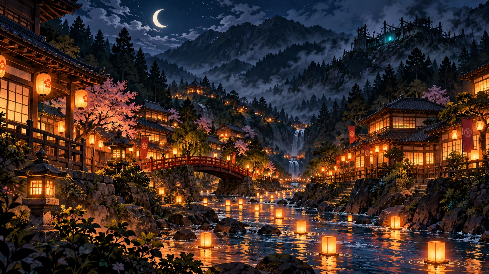
Couverture1600 × 900 · WebP
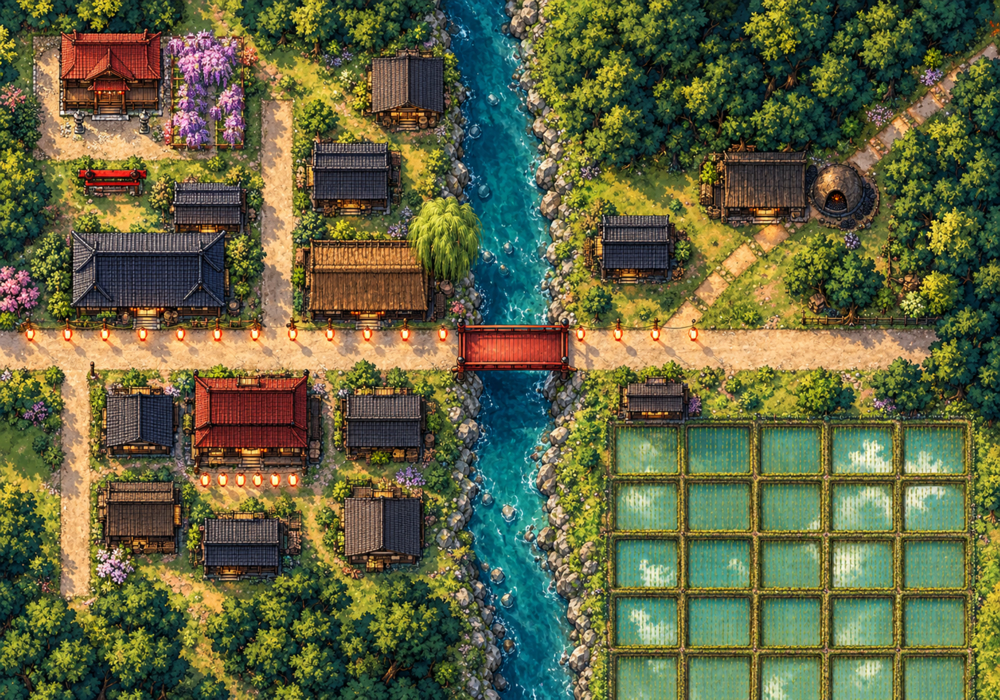
Hotaru-mura4000 × 2800 · WebP
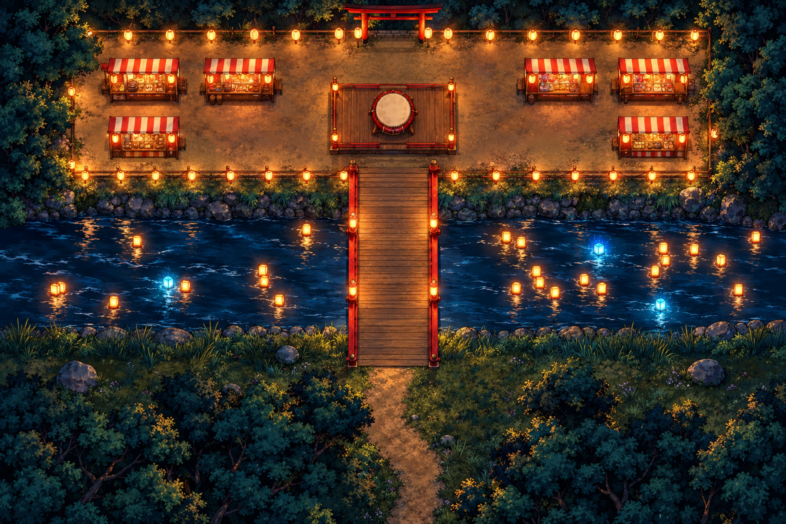
Le pont des lanternes3000 × 2000 · WebP
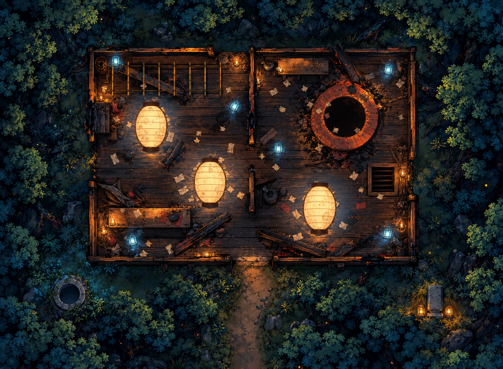
L’atelier abandonné3000 × 2200 · WebP
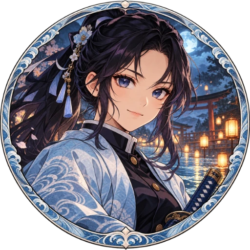
Mizuki Asagiri512 × 512 · WebP · Coins transparents
Kenta Hayase512 × 512 · WebP · Coins transparents
Chiyo Akabane512 × 512 · WebP · Coins transparents
Itsuki Kazahaya512 × 512 · WebP · Coins transparents
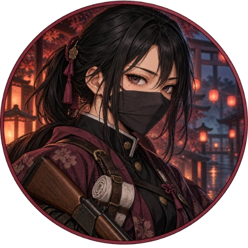
Tamaki Kurosu512 × 512 · WebP · Coins transparents
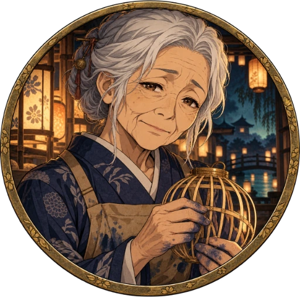
Oume512 × 512 · WebP · Coins transparents
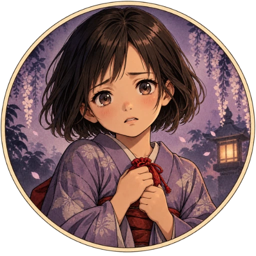
Mii512 × 512 · WebP · Coins transparents
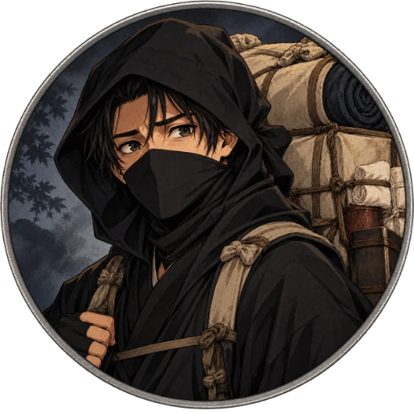
Shinpei, le Kakushi512 × 512 · WebP · Coins transparents
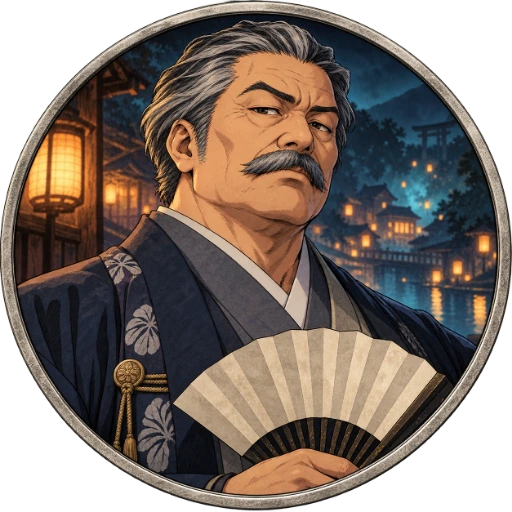
Gonbei Arakawa512 × 512 · WebP · Coins transparents
Okiku512 × 512 · WebP · Coins transparents
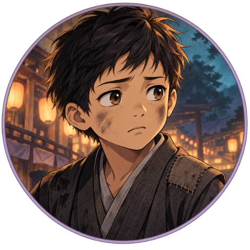
Sota512 × 512 · WebP · Coins transparents
Fumi512 × 512 · WebP · Coins transparents
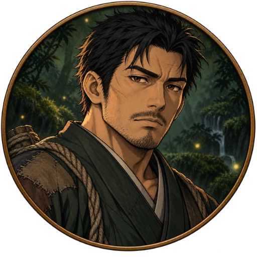
Jirō512 × 512 · WebP · Coins transparents
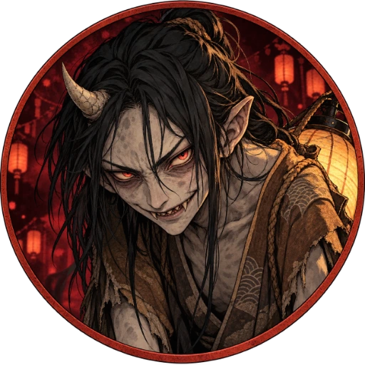
Rôdeur — le bossu512 × 512 · WebP · Coins transparents
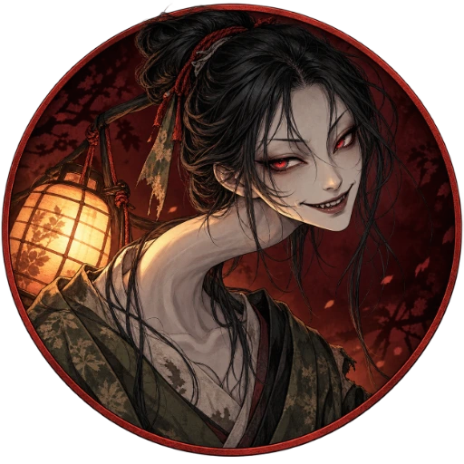
Rôdeur — le long cou512 × 512 · WebP · Coins transparents
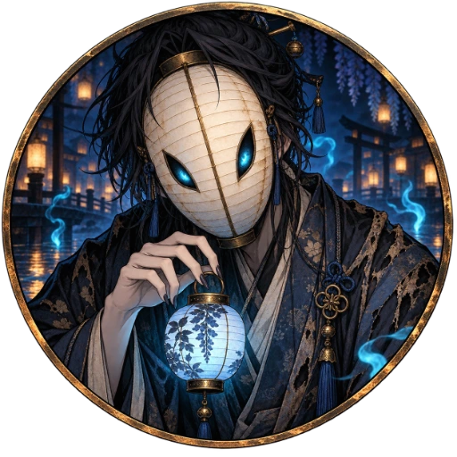
Tomoshibi512 × 512 · WebP · Coins transparents
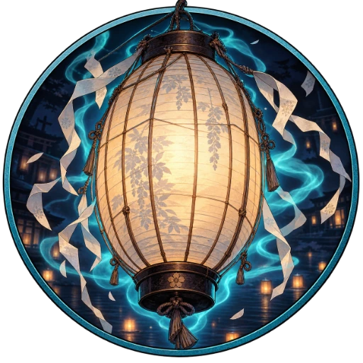
Lanterne-prison512 × 512 · WebP · Coins transparents
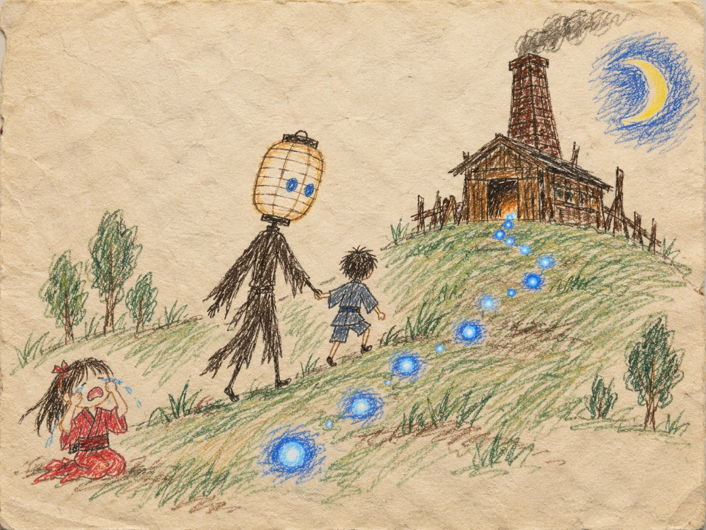
Dessin de Mii1200 × 900 · WebP
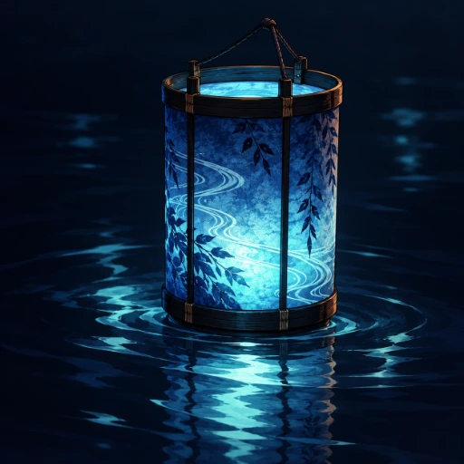
Lanterne bleue512 × 512 · WebP
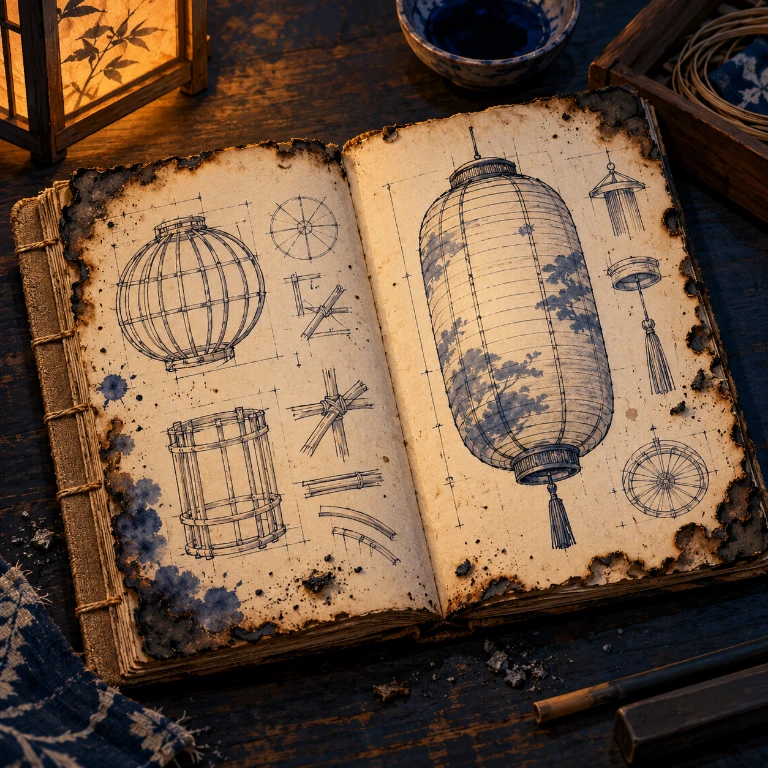
Carnet de Kansuke768 × 768 · WebP
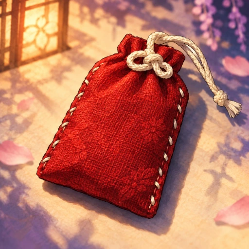
Omamori de Mii512 × 512 · WebP
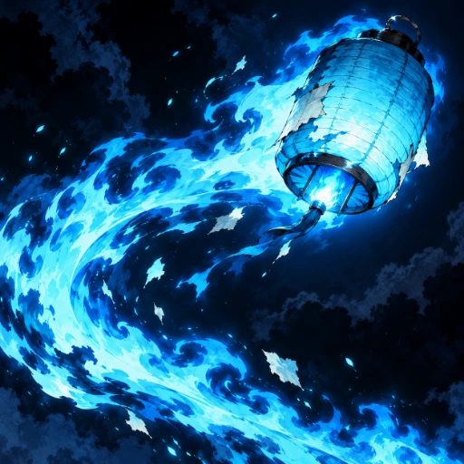
Feu follet bleu512 × 512 · WebP
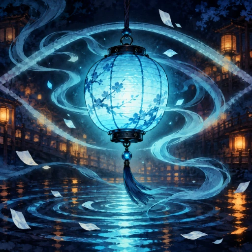
Lueur d’oubli512 × 512 · WebP
Illustrations originales générées avec l’outil intégré image_gen, le 29 octobre 2026. Prompts de génération et inventaire complet.